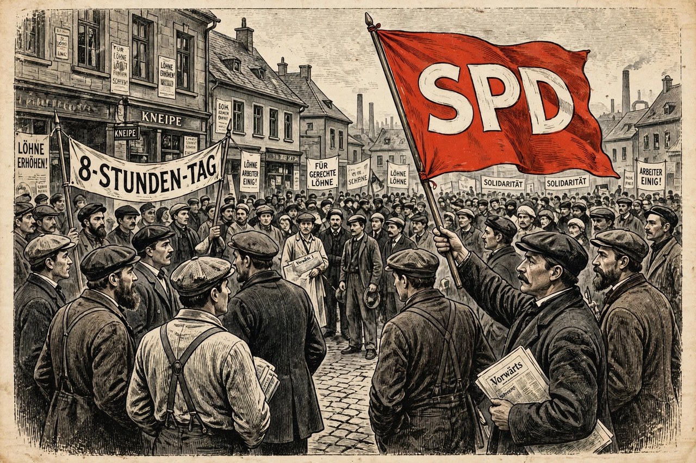

From Wikipedia, the free encyclopedia
| Social Democratic Party of Germany | |
|---|---|
 Sozialdemokratische Partei Deutschlands (SPD) | |
| Founded | 23 May 1863 (ADAV); 1875 (unified at Gotha) |
| Ideology | Social democracy |
| Key figures | August Bebel, Friedrich Ebert, Philipp Scheidemann, Otto Wels, Willy Brandt, Helmut Schmidt, Gerhard Schröder, Olaf Scholz |
| Headquarters | Willy-Brandt-Haus, Berlin |
The Social Democratic Party of Germany (German: Sozialdemokratische Partei Deutschlands, SPD) is a social democratic political party in Germany and, founded in 1863, the country's oldest extant political party. It has been one of Germany's two major parties for most of the post-war era and has led governments under Friedrich Ebert, Willy Brandt, Helmut Schmidt, Gerhard Schröder, and Olaf Scholz.
The SPD traces its origins to Ferdinand Lassalle's General German Workers' Association (1863) and the Eisenach party of August Bebel and Wilhelm Liebknecht; the two united at Gotha in 1875. Bismarck's Anti-Socialist Laws (1878–1890) banned its organisations and press, yet its vote grew relentlessly; by 1912 it was the largest party in the Reichstag. Eduard Bernstein's "revisionism" and Rosa Luxemburg's revolutionary Marxism fought over its soul, but in practice the party combined Marxist rhetoric with reformist trade-union politics.
In November 1918 Philipp Scheidemann proclaimed the republic from a Reichstag balcony, and Friedrich Ebert became the first president. The SPD split over the First World War had produced the Independent SPD and, by 1919, the Communist Party (KPD), with which relations remained bitterly hostile — the KPD under Stalin's "social fascism" line denounced the SPD as the main enemy. The SPD anchored the Weimar coalition with the Centre Party and led Prussia's government, but after 1930 it merely "tolerated" Brüning's cabinet. In the Reichstag of March 1933, SPD deputies under Otto Wels alone voted against the Enabling Act; the party was banned in June 1933 and operated in exile as the Sopade.
Refounded in 1945 under Kurt Schumacher, the SPD was forcibly merged into the SED in the Soviet zone but grew in the West. Its 1959 Bad Godesberg programme formally abandoned Marxism for a broad people's-party appeal. Willy Brandt's chancellorship (1969–1974) brought Ostpolitik and the Nobel Peace Prize; Helmut Schmidt (1974–1982) managed economic crises; Gerhard Schröder (1998–2005) led a red-green coalition and the Agenda 2010 reforms; Olaf Scholz became chancellor in 2021 at the head of the "traffic light" coalition. The party remains a founding member of the Party of European Socialists.